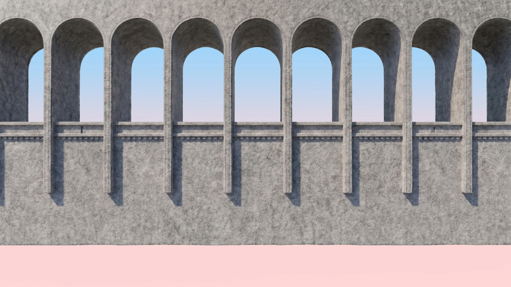
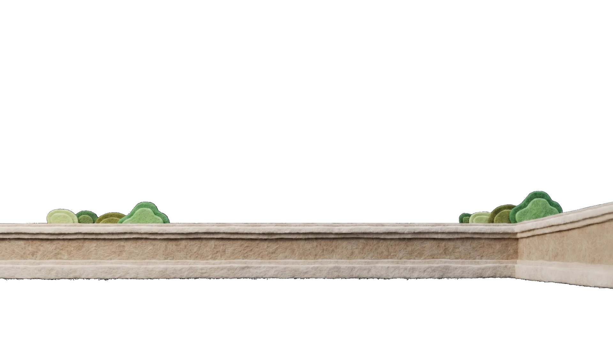
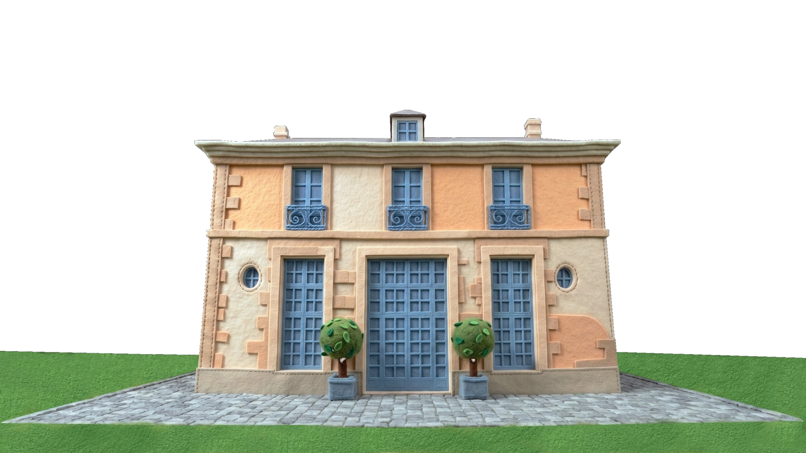

15h00 — Cérémonie civile
Mairie de Noisy-le-Grand
Place de la Libération
93160 Noisy-le-Grand
C & N
Chargement…



Save the date
Samedi 5 Septembre 2026 à 15h00
Plus que…
avant le grand jour
Les lieux
La journée se déroule en deux temps : la cérémonie civile à la mairie, puis la réception au cœur d'un domaine historique.
15h00 — Cérémonie civile
Place de la Libération
93160 Noisy-le-Grand
17h00 — Réception
1 Rue de la Citadelle
94110 Arcueil
Le déroulé
Mairie de Noisy-le-Grand · Place de la Libération
Comptez 30 à 45 minutes selon le trafic.
Accueil dans le parc du domaine.
Cérémonie traditionnelle d'environ 30 minutes, ouverte à tous nos invités.
Apéritif dans le parc.
On danse jusqu'au bout de la nuit.
Infos pratiques
Parking sur place, gratuit pour tous nos invités.
Le stationnement près de la mairie peut être difficile. Nous vous recommandons d'arriver 20 à 30 minutes en avance.
Parking conseillé :
Parking Indigo Noisy-Centre
12 bis Av. Emile Cossonneau, 93160 Noisy-le-Grand
RER A · station Noisy-le-Grand – Mont d'Est
RER B · station Arcueil-Cachan (5 min à pied)
Bus 184 · arrêt Cousin de Méricourt (2 min à pied)
Si vous souhaitez passer la nuit après la soirée, voici quelques pistes proches de la Faisanderie.
Cachan · 3 ★
≈ 1,5 km de la Faisanderie
À partir de ~70 €/nuit
Villejuif
≈ 2,5 km de la Faisanderie
Voir sur Maps →Bagneux · Appart-hôtel
≈ 3 km de la Faisanderie
Voir sur Maps →Pour un séjour plus intimiste, en famille ou entre amis, nous vous recommandons de chercher un logement sur ces plateformes dans les communes proches : Arcueil, Cachan, Villejuif, Gentilly, Le Kremlin-Bicêtre, Bagneux, Montrouge.
💡 Ces communes sont toutes desservies par le RER B ou le tramway T3, ce qui facilite le retour après la soirée.
Tons pastel
Rose poudré, bleu ciel, lavande, vert d'eau, beige, ivoire…
Tout ce qui est doux et lumineux est le bienvenu.
Merci d'éviter simplement les couleurs vives ou très saturées (fluo, rouge vif, noir profond…) pour préserver l'harmonie de la journée.
Niveau : cocktail — chic, sans être en grande tenue.
Votre présence
Nous serions heureux de partager ce moment avec vous.
Merci de répondre via le formulaire ci-dessous.
Pour toute question :
07 64 41 02 86 ·
colinnoel007@gmail.com